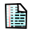

Opties knoppen:
VRAGENLIJST:
Je bekijkt momenteel de vragenlijst administratie sectie van LimeSurvey.
Van hieruit kan je de algemene instellingen voor deze vragenlijst bepalen. Je kan ook nieuwe groepen toevoegen of een bestaande groep selecteren om te bekijken of bewerken.
|
Opties knoppen: |
|
| Vragenlijst actief: Dit icoon is zichtbaar als de vragenlijst geactiveerd is en klaar is om deelnames te bewaren. | |
| Deactiveer vragenlijst: Klik hier om de actieve vragenlijst te deactiveren | |
| Vragenlijst niet actief: Dit icoon is zichtbaar als de vragenlijst niet actief is | |
| Activeer vragenlijst: Klik hier om de vragenlijst te activeren | |
| Test vragenlijst: Klik hier om de vragenlijst in te vullen (of testen als de vragenlijst momenteel niet actief is) | |
|  | Ingave: Klik hier om naar het ingave scherm te gaan. Van hieruit kunt u de doorgefaxte vragenlijsten ingeven |
| Printvriendelijke versie: Klik hier om een printvriendelijke versie van de vragenlijst te tonen. | |
|
|
Bewerk vragenlijst: Klik hier om de details van de huidige vragenlijst te bewerken. |
|
|
Wis vragenlijst: Klik hier om deze vragenlijst te wissen. Deze knop is enkel zichtbaar als er geen groepen zijn. |
|
|
Exporteer vragenlijst: Klik hier om de volledige vragenlijst met groepen, vragen, antwoorden en condities naar een bestand te exporteren. |
| Bekijk deelnames: Klik hier om de deelnames van deze vragenlijst te bekijken. Dit kan enkel als de vragenlijst actief is. | |
| Toegangscodes: Klik hier om de toegangscodes voor de huidige vragenlijst te beheren. | |
|
|
Toevoegen groep: Klik hier om een nieuwe groep vragen aan de huidige vragenlijst toe te voegen. |
Toevoegen nieuwe groep
Klik op
 om een nieuwe groep aan de vragenlijst toe te voegen.
om een nieuwe groep aan de vragenlijst toe te voegen.
Alle vragenlijsten moeten minimum één groep bevatten. Groepen worden gebruikt om vragen te groeperen in logische delen. Als je "Toevoegen groep" kiest; zal u een leeg scherm krijgen met twee velden om in te vullen. Naam groep: De titel van de groep. Dit veld is verplicht en bepaalt de volgorde waarin de groepen zullen verschijnen. De groepen worden op dit veld alfabetisch afgelopen, bijvoorbeeld: "Sectie 1:) Over deze vragenlijst." , "Sectie 2:) Je mening.". Omschrijving groep: Dit is een optioneel veld en kan gebruikt worden om een omschrijving op te geven die aan de deelnemers wordt getoond terwijl ze de vragenlijst invullen. Als er geen omschrijving is opgegeven bij een "vraag per vraag" vragenlijst, zullen de deelnemers geen omschrijving te zien krijgen voor de vragen.